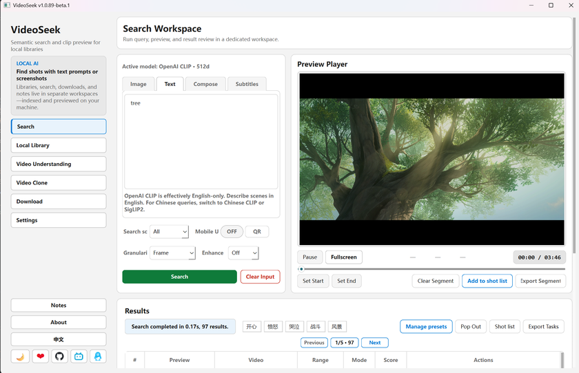
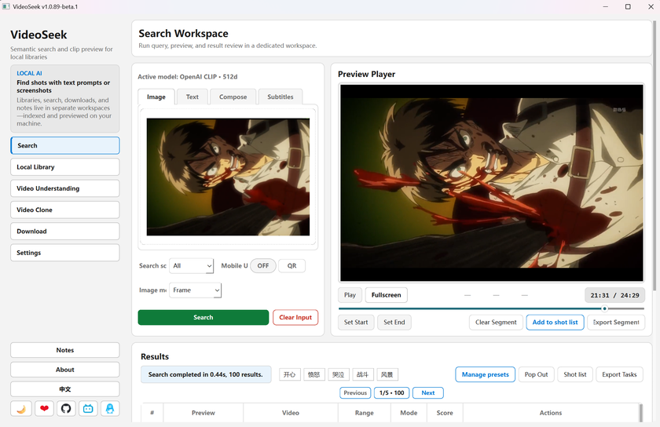
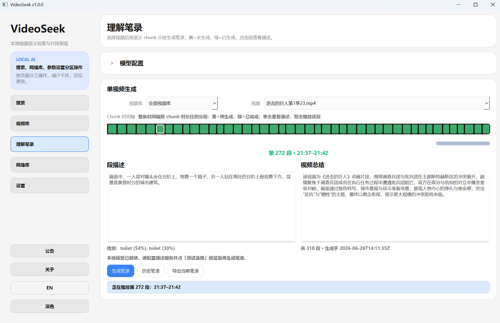

本地视频库
添加文件夹，勾选后同步抽帧建索引，支持多库与搜索范围。
Windows · 开源 AGPL-3.0
文字 / 截图搜画面，也能按硬字幕关键词找时间点。索引与检索都在本机，不上传视频；预览后直接导出 MP4。

添加文件夹，勾选后同步抽帧建索引，支持多库与搜索范围。
描述场景或上传参考图找相似镜头；字幕库 OCR 后还可按硬字幕关键词定位时间点。
时间轴预览命中片段，确认后导出 MP4。
可选 HTTP 接口：供 Cursor 等调用搜索、读库与导出，数据仍留在本机。


更细的步骤见 教程文档。
安装包不含模型，首次使用需在应用内导入。 也可手动下载 运行资源。
更多步骤见 使用教程。
Windows 为主的本地视频语义检索桌面应用：文字 / 截图搜画面，硬字幕 OCR 后也能按关键词找时间点，预览并导出 MP4。索引与检索都在本机，不上传视频。
安装包与运行资源分离。首次需导入画面模型与 FFmpeg（字幕另需 OCR）。可事先下载资源包再在应用内离线导入；不必自己装 Python。资源已在本地即可离线初始化。
支持。在字幕库提取硬字幕（OCR）后，按关键词搜时间点，精确 / 模糊可选，与画面检索相互独立。
永久免费，AGPL-3.0 开源。请从本站或 GitHub 获取；勿信收费倒卖或付费代装。
使用问题或建议，欢迎来聊。